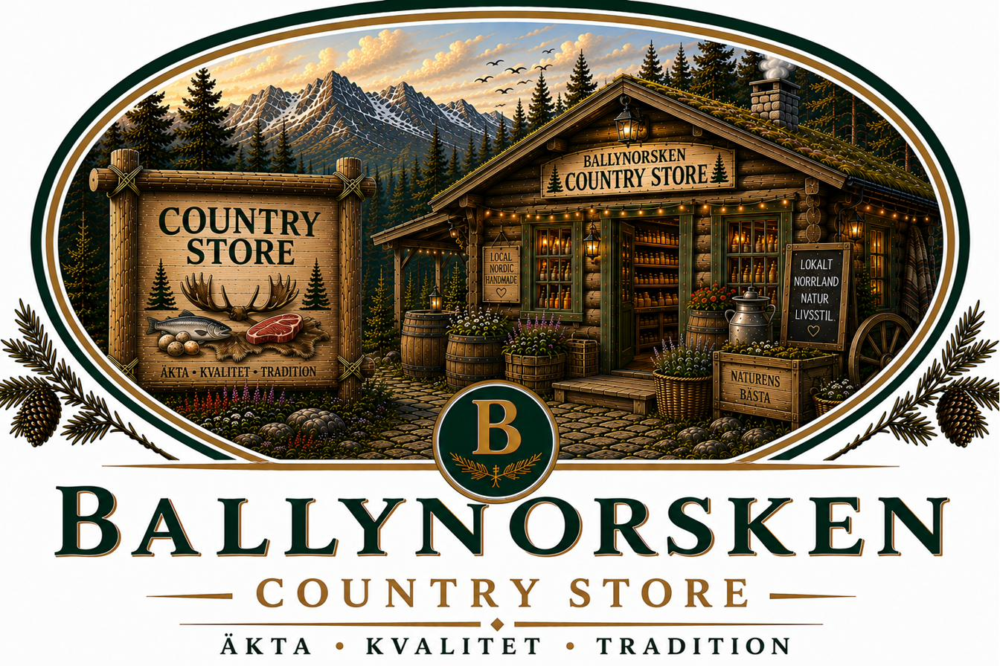

BALLYNORSKEN Nordic WildernessA small shop of Norrbotten goods — food, craft and a few things you'll want to take the wilderness home with you.
The Ballynorsken Country Store brings together the best of our region — carefully selected products that reflect the values we live by. From handcrafted items and local produce to gear for life in the wilderness, every product has a story, a purpose, and a place.
"Buy with meaning. Support local. Take a piece of the Nordic wilderness home."
We prioritise local producers, artisans, and small businesses.
We choose products that are genuine, well made, and built to last.
We support sustainable practices and products with a lighter footprint.
We celebrate Nordic tradition, design, and craftsmanship.
Every item is chosen with care, because it represents who we are.
Jams, syrups, honey, teas, and other regional delicacies.
Pottery, woodcraft, textiles, candles, and unique gifts.
Quality gear and accessories for life in the wild.
Nordic-inspired items for your home and lifestyle.
Practical, durable products for you and your dog.
Books, maps, and stories that inspire adventure.
We personally select our products. We meet the makers, try the goods, and choose only what we believe in. If it's not good enough for our family, it's not good enough for our store.
Quality you can feel. Values you can trust.
Every purchase supports local families, creators, and communities. You're not just buying a product — you're supporting a way of life.
Strengthening local businesses and creating opportunities.
Investing in the future of our region.
Keeping crafts, skills, and stories alive.
Your support makes a real difference.
Local roots. Lasting impact.
More than just a store — it's an experience. A place where you'll find inspiration, discover something special, and take home a piece of Ballynorsken. For yourself, or for someone you care about.
Take more than memories. Take meaning.
Whether you're visiting for a coffee, a training day, or a stay in the cabin, our Country Store is here to enrich your experience. Thank you for supporting local, choosing quality, and being part of the Ballynorsken story.
Tack för stödet! Thank you for your support!
"Our Country Store exists because we believe in the people behind the products. When you choose local, you help protect our communities, our nature, and our way of life. We are proud to share their work with you. Thank you."
"Support local. Live Nordic. Keep tradition alive."
Questions about local products or an order? This goes straight to store@ballynorsken.se — or use our general contact page instead.